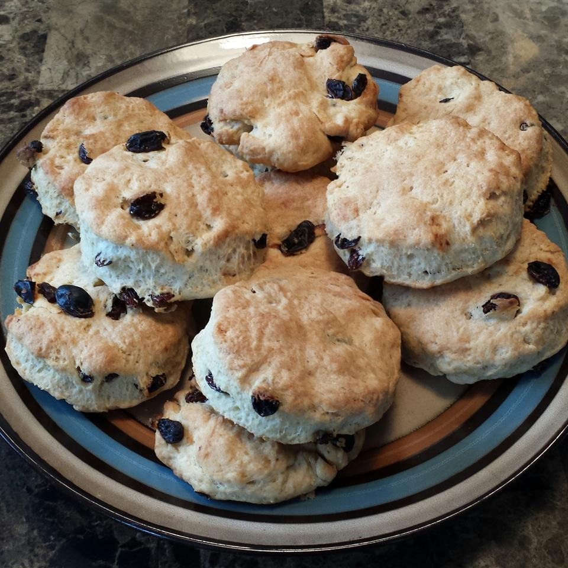

Tea Biscuits

Description
A quick tea time treat. Serve warm, buttered, and with jam or honey.
Ingredients
- 2 cups all-purpose flour
- 4 teaspoons baking powder
- 1 teaspoon salt
- ½ cup shortening
- ¾ cup milk
Directions
- Preheat oven to 400 degrees F (205 degrees C). Grease a baking sheet.
- Combine flour, baking powder, and salt. Cut shortening in until mixture has a fine crumb texture.
- Stir in milk with a fork to make a soft dough. Knead 8 to 10 times, and then roll out to a thickness of at least 1/2 inch.
- Cut into rounds with a cookie or biscuit cutter. Place on cookie sheet, and allow to rest for a few minutes.